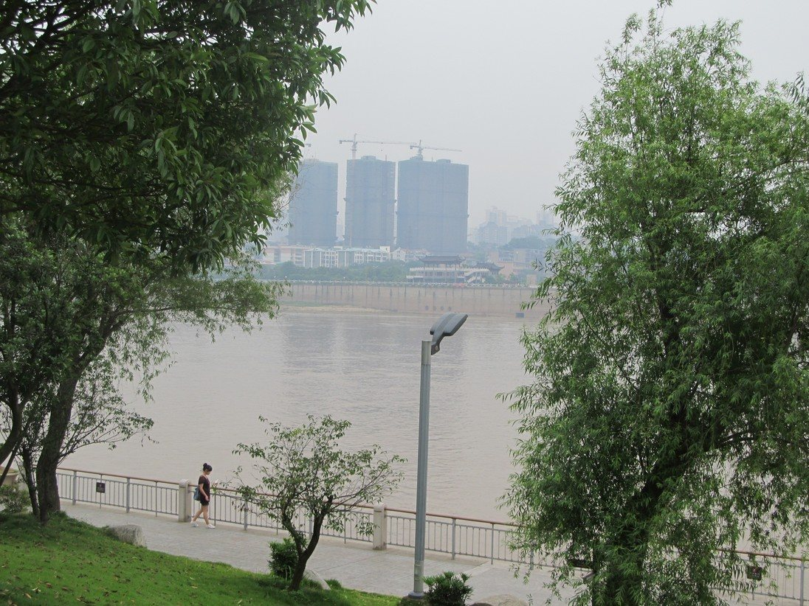
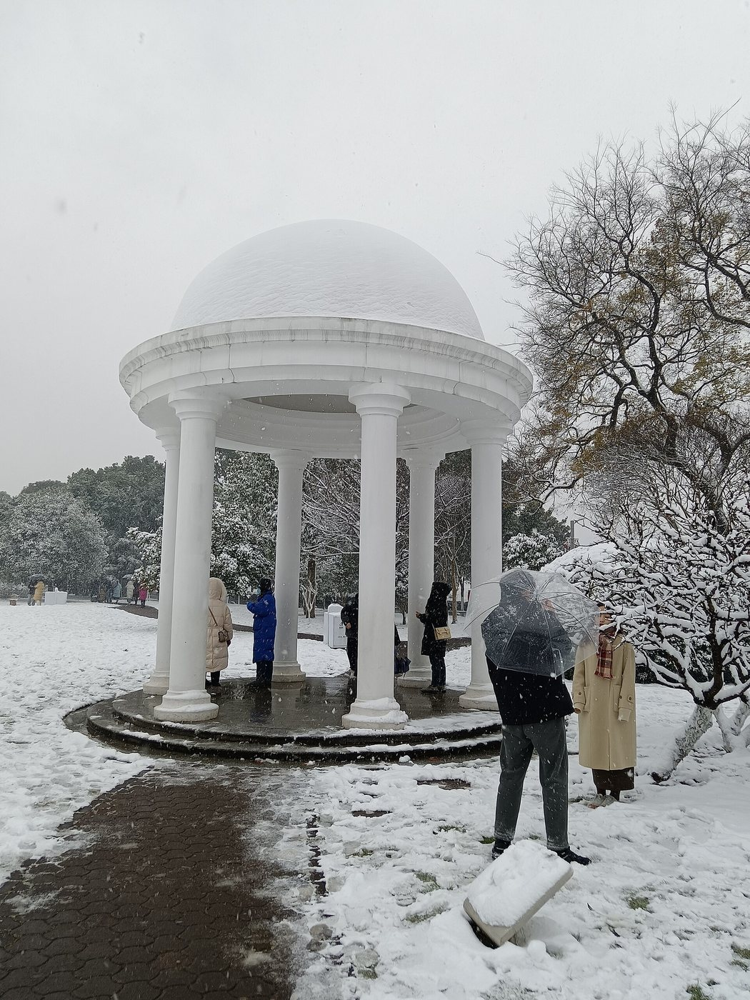
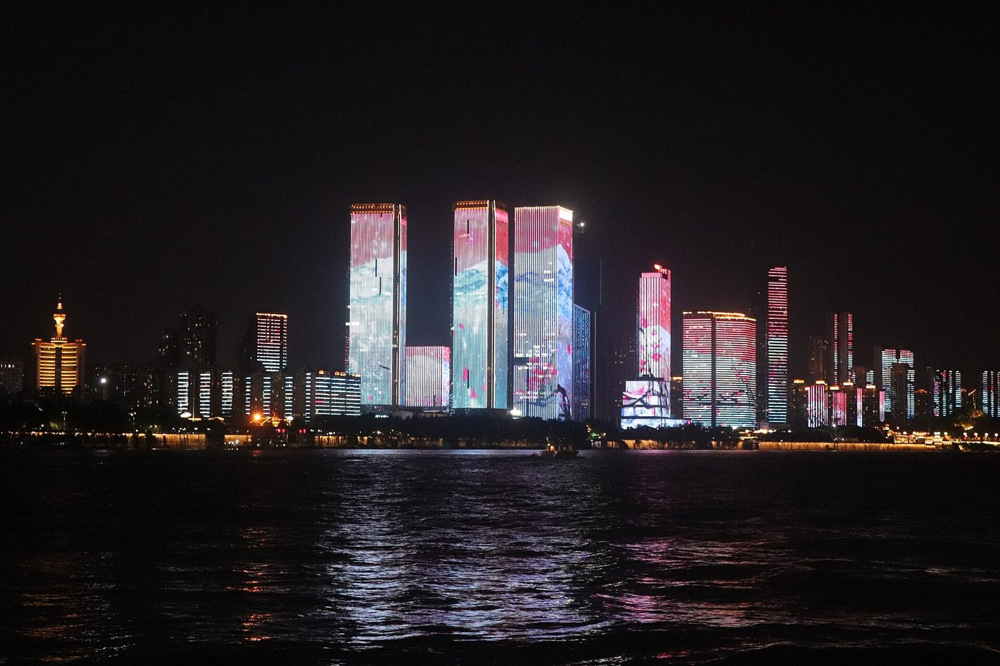
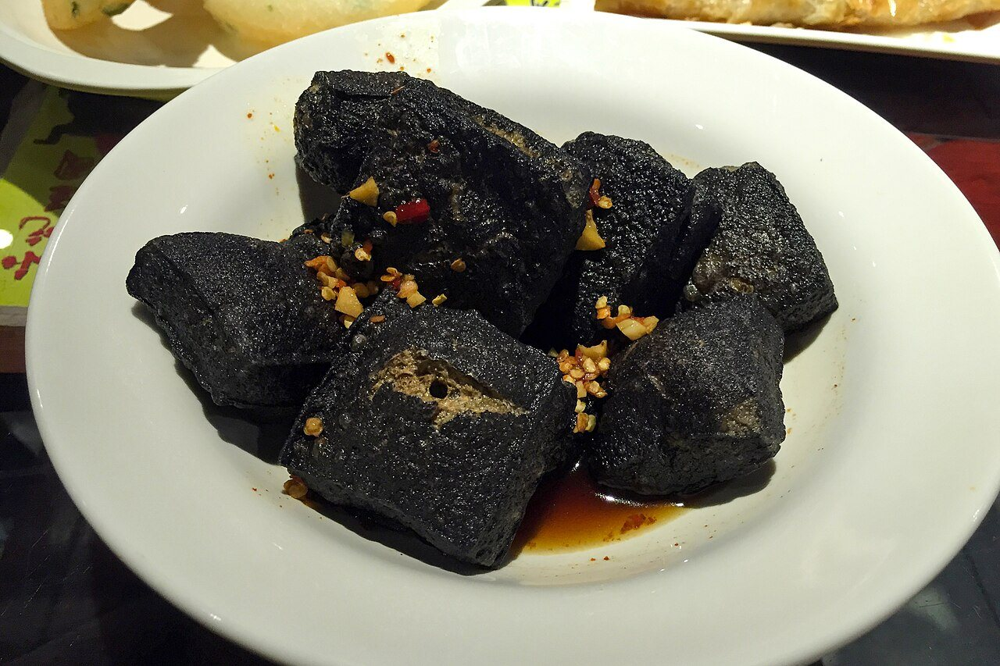
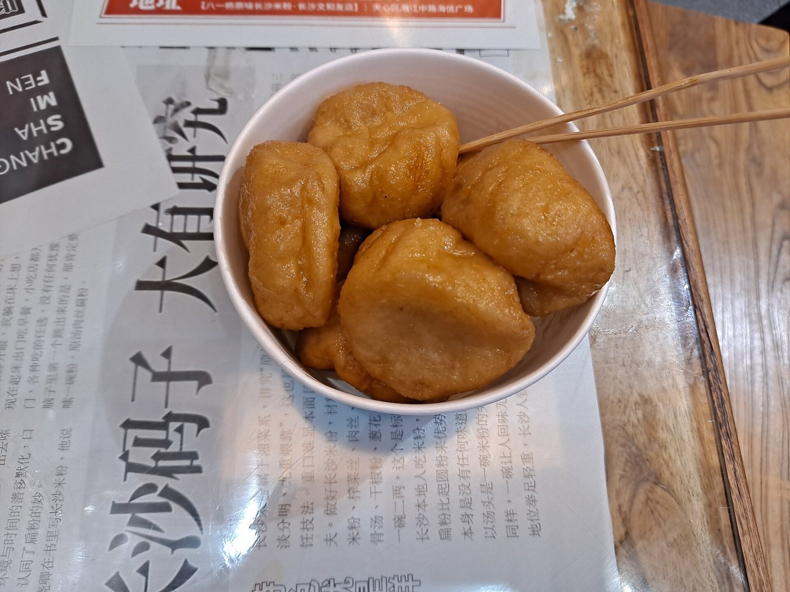
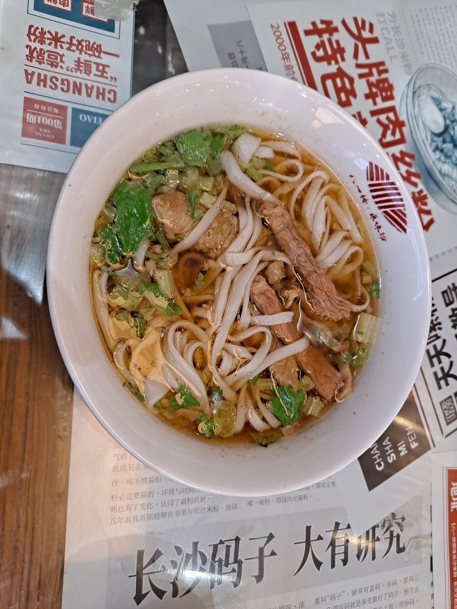
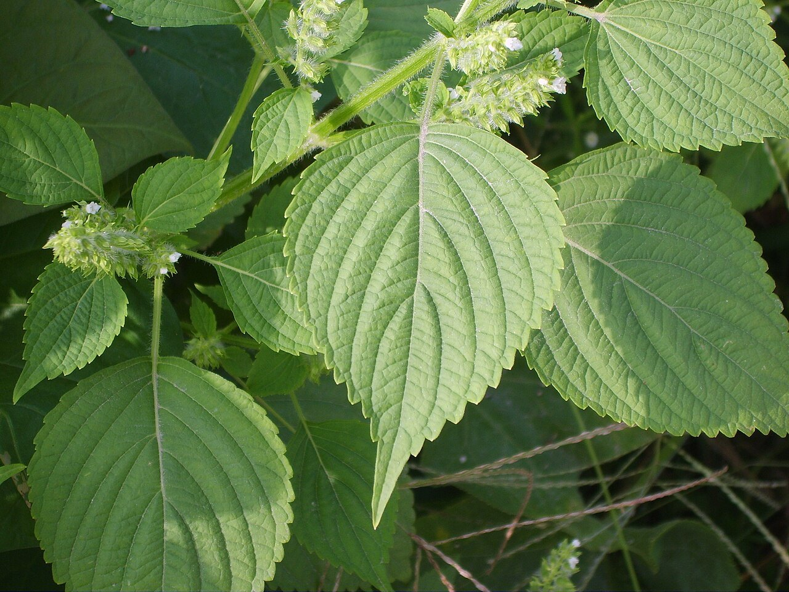

红色印记 · 橘子洲头
“独立寒秋，湘江北去，橘子洲头。” 橘子洲是湘江中央的一座长岛，青年毛泽东曾在这里思考国家前途，抒发理想与抱负。如今，青年毛泽东艺术雕塑已成为长沙最具代表性的红色地标。
长沙橘子洲头文旅宣传 H5
红色文化 · 湘江风光 · 城市烟火
选择一个点位，开启你的线上漫游
“独立寒秋，湘江北去，橘子洲头。” 橘子洲是湘江中央的一座长岛，青年毛泽东曾在这里思考国家前途，抒发理想与抱负。如今，青年毛泽东艺术雕塑已成为长沙最具代表性的红色地标。
橘子洲四面环水，像一颗绿色明珠镶嵌在湘江中央。这里既有开阔的江景，也有洲头步道、花海、树荫和晚风。春天可观花，夏日可纳凉，秋天可看江景，冬日也别有一番意境。



长沙不只有湘江和橘洲，还有浓厚的烟火气。逛完橘子洲，可以顺路品尝长沙特色小吃，感受地道湖湘味道。

外酥里嫩，香辣入味

软糯香甜，口感细腻

汤底浓郁，码料丰富

酸甜清爽，适合夏天
第一次去橘子洲，可以提前做好行程规划，避免走太多路。以下是几个实用建议。
建议地铁2号线直达橘子洲站
下午到傍晚游览舒适度较高
园区较大，可选择观光小火车
雕像、江边步道、花海都很出片
夏天注意防晒和补水
预留 2—3 小时游览时间
完成线上游览，收集属于你的橘洲纪念印章。
集齐三枚印章后即可生成海报
感受红色湖湘，遇见星城长沙
本 H5 以橘子洲红色文化、湘江风光和长沙城市烟火为核心，通过线上交互方式呈现橘洲之美。希望每一位浏览者都能在轻触屏幕之间，感受到长沙这座城市的红色记忆与湖湘气质。
云游橘洲 · 长沙橘子洲文旅宣传 H5 感谢观看
独立寒秋，湘江北去，橘子洲头。
看万山红遍，层林尽染；
漫江碧透，百舸争流。
鹰击长空，鱼翔浅底，
万类霜天竞自由。
怅寥廓，问苍茫大地，谁主沉浮？